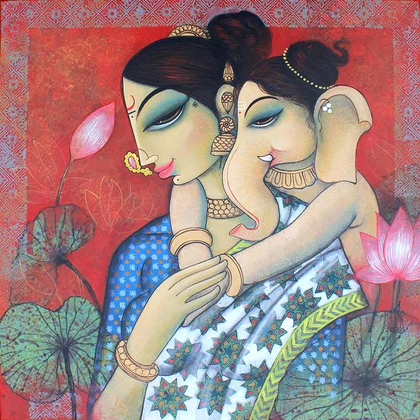

My Art and Gallary Webpage
Home
Paintings
Traditional Arts

An art gallery is a commercial space where artworks are displayed and sold.
Galleries act as a link between artists and collectors, hosting exhibitions, and promoting artists' work.
They play a vital role in the art world by nurturing artists, connecting them with potential buyers, and fostering a vibrant cultural landscape.
Art museum
The gallery has modern and traditional art.

Culture of Gujarat
Gujaratis who were formerly called “Gurjars” are inspired by the waves from ancient times which take over the values of culture, arts and traditions. Gujarat has a very strong cultural impact of socio economic political history. Being the birth place of Gandhi Ji, Gujarat has a special importance in the Indian Political History. Moreover, Gandhi Ji’s non-violence movement had a great impact on the Gujaratis.